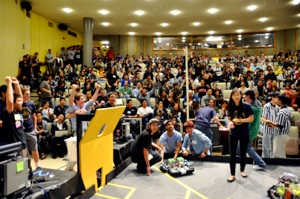
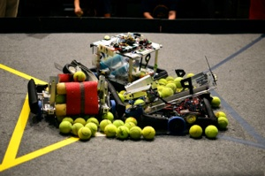
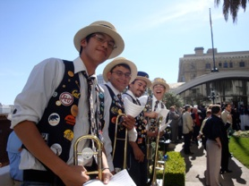
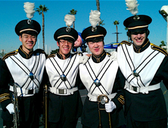

Interests

In my spare time, I also like to stay involved with various student groups in Cal.
In 2012, I was a part of Pioneers in Engineering (PiE), a student-run organization that hosts annual robotics competitions for underprivileged high school students in the Bay Area. As the Mentorship coordinator, I helped develop robotics curriculum for Berkeley undergraduates in order to prepare them to mentor high school teams in our competition.
In my time with PiE, I have had a chance to work with Lawrence Hall of Science in its inaugural Bay Area Science Festival event, Robos vs Dinos, as well interact with over 75 mentors and 200+ high school students in our robotics competition.
pIONEERS IN eNGINEERING



University of california marching band
High school students cheer on at one of the final matches of our competition
Several high school robots competing for the center spot in our 2012 competition
Picture of almost all of the PiE 2012 participants inside Hearst Memorial Mining Building. With over 200 high school students from SF to Hayward, 80 Berkeley undergraduate mentors, and 30 new staff, the 4th year of PiE was a huge milestone for our program.
I first held a trombone in 5th grade. Ever since then, I have continued to play it for my enjoyment. For the past three years, I have been a part of the Cal Band as a first trombonist. Every home football game, we rehearse and practice a new 6 minute-long field show for the entertainment of thousands of fans in Memorial Stadium


At the Big Bay Balloon Parade with the Cal Band in the Holiday Bowl in 2012
At the Guardsman Straw Hat Band Performance during Big Game 2011
PiE pictures credited to Hamilton Nguyen and William Li